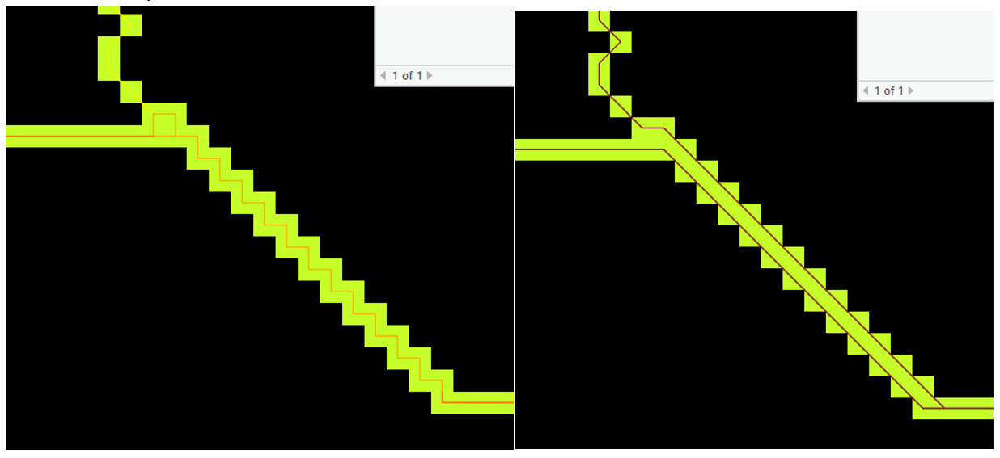

2. The FLDPLN Model#
This chapter introduces the FLDPLN model for flood inundation mapping. It provides a review on different components of the FLDPLN model and how to run the model using both the MATLAB scripts and the FLDPLN Python package (i.e., fldpln_py).
2.1. Introduction#
FLDPLN is a low complexity flood inundation mapping model that implements the backfill and spillover flooding mechanism. It generates a flood inundation library which can be used to map flood inundation depth in real-time with stage observations and forecasts. More details needed to describe the model.
2.2. FLDPLN Inundation Library#
The model produces a FLDPLN library which is a collection of flood relationships between flood source pixels/cells (FSPs), which are stream pixels, and floodplain pixels (FPPs) for a watershed or geographical area. Each FSP-FPP pair has a depth to flood (DTF) property associated with it, which is the minimum depth of flow (DOF) at the FSP that is required to flood the FPP. While any FSP could flood a FPP eventually with increasing DOF, the FSP-FPP pairs and their DTFs are calculated with the maximum DOF at a FSP set to a certain limit. In Kansas, the max DOF is set to 15 meters or about 50 feet. Note that DTF and DOF are interchangeable in the FLDPLN model.
A library is created by first identifying stream networks in a watershed and segmenting the networks into stream segments and then calculating the FSP-FPP pairs and their DTFs for each segment. Each segment consists of a set of FSPs and all the FPPs that could be flooded by a segment FSP are grouped together, and the relationships and their DTF are saved in a segment file in MATLAB’s .mat format. As such, a FPP in a segment file has at least one FSP on the segment that it could be flooded by, and a FSP on a segment can flood at least one FPP. Note that a FPP within a segment file may still be flooded by the FSPs on other segments, especially the upstream and/or downstream segments. Is this description on segment file correct? I recall that the number of FSPs associated with a FPP in a segment is always one! If this is the case, does this mean that the segment file only keeps the FSP with the least DTF? In addition, how are those segments decided, to keep all the segment files in appropriate the same size?
Note that there is no overlapping FSPs among segments. When segments are converted to vector lines by connecting FSP pixel centers, those line DON’T meet exactly at their ends in the stream network as there is always either one or square root of two pixel size space between two adjacent segments.
2.3. General Steps of Using the FLDPLN Model#
Pre-process DEM
Generate segments
Generate segment library
Tile the library
Map floods
2.4. Hydrological Conditioning DEM#
The FLDPLN model requires a hydro-conditioned digital elevation model (DEM) as input. The hydro-conditioning process includes identifying depressions and filling shallow depressions, hydro-conditioning the DEM (dam and road culvert), adding flood defenses to the DEM, and calculating flow direction and flow accumulation. The hydro-conditioned DEM is then used to create stream networks and stream segments.
Download DEM (typically in TIF format)
Calculate hydrological derivatives from the DEM
Identify depressions and fill shallow depressions
Hydro-conditioning the DEM (dam and road culvert)
Add flood defenses to DEM
Calculate flow direction and flow accumulation
Create BIL files for use in FLDPLN
2.4.1. Scripts and Tools#
To convert the DEM derivative to proper BIL files for use in FLDPLN, we can use the fldpln_pre_process_tool tool in the fldpln_preprocess_model.atbx ArcGIS Pro toolbox developed by David Weiss. The tool can be further improved:
switch the order of output and input boxes, first input box and then output box
set nodata value also correctly for the DEM bil file.
2.5. Generate Stream Segments#
For version 8, the following MATLAB scripts should be run sequentially:
xp_generate_segments.m
xp_create_segment_library.m
xp_generate_stage_volume_table.m
xp_format_segment_library.m
xp_prepare_library–script to format Jude/David lib for tiling and use with the fldpln_py and fldpln Python packages.
The first step to create a FLDPLN library is to identify stream networks and create stream segments from a hydro-conditioned digital elevation model (DEM). The stream networks/pixels are first identified using a flow accumulation threshold (‘strthr’). The stream networks are first divided into reaches (stream links in ArcGIS term), which are stream segments between headwater and confluence pixels or between two consecutive confluence pixels. Note that pixels flow out of the DEM are treated as confluence pixels in this process. Those natural reaches/segments are further divided based on flow accumulation jumps greater than or equal to ‘facthr’. Then the segments are bisected until all segments are no longer than ‘seglen’.
The default values for the 3 parameters are: 70 sq. miles, 25 sq. miles, and 2 miles for the libraries in KS. Note that Kansas FLDPLN libraries stream networks are more coarse grained than the National Water Model (NWM) reaches. This is because the stream networks are generated just to use available USGS gauges. If the NWM discharge is used for the flood inundation mapping, the stream networks need to be densified.
2.5.1. Scripts and Tools#
2.5.1.1. MATLAB Scripts#
Two scripts, create_segdb_facthr_maxlen.m and create_segments.m, are used to identify stream networks and create stream segments from a DEM. The former is the original script and the latter is a simple wrapper function to make the original function easy to use.
2.5.1.2. Python Scripts#
Python scripts to use the FLDPLN Python package to generate segments from a DEM.
2.5.2. Output Files#
The outputs of the segment generation process are two files:
str_segid BIL file which stores segment IDs as a raster data. Non-segment pixels are assigned a value of 0 (i.e., NODATA).
seg_info.mat file which contains the following 7 variables.
strcf–stream confluence pixels’ location as matrix indices
strhd–stream headwater pixels’ location as matrix indices
strpx0—stream pixels with location and flow accumulation
Col1—MATLAB linear index of start pixel
Col2—flow accumulation of the start pixel
strpx– stream pixels with segment ID and reach ID
Col1—MATLAB linear index of start pixel
Col2—flow accumulation of the start pixel
Col3—reach ID
Col4—segment ID
header–column names of the seg_info variable
seg_info—segment information
start pixel index, end pixel index, start facc, end facc, segment length (# of pixels), downstream segment ID, reach ID
seg_info0—reach information
First segment start pixel, last segment end pixel, their corresponding faccs, total number of stream pixels
Currently, the last column is either 0 (reach flows out DEM) or 1 (other reaches). We may want to change the column to indicate reach reach network connectivity which might be useful for automatically assign stream orders to segments.
2.5.2.1. Tools#
The segment ID raster file can be converted to a shapefile using the ArcGIS Stream to Features tool. The shapefile can then be used to examine and select segments and create a segment library. Note that the Raster to Polyline tool doesn’t work properly in some cases. The left stream polyline is generated by the Raster to Polyline tool, and the right stream polyline is generated by the Stream to Feature tool. The left polyline is erroneous. Also note that the Stream to Features tool connects upstream segments at the downstream confluence pixel.

2.6. Create Segment Library#
The next step is to create a FLDPLN library for each of the segments. The library is a collection of flood inundation relationships between the FSPs on a segment and the FPPs those FSPs may inundate. The library stores the minimum depth of flow (DOF) required to flood a FPP from a FSP on the segment. The FSP-FPP flood inundation relationship is obtained by iteratively raising the water level at the FSPs on a segment until the FPPs is flooded. Water inundates a FPP through either backfill flooding or spillover flooding mechanism. The following parameters are used in the flood inundation process:
fldmx–maximum DTF at FSPs (all DTF values will be less than or equal to this value)
dh–depth step for the iterations
fldmn–minimum DTF at FSPs (all floodplain heights lower than this value get mapped to this value at the end)
mxht–cap height = max(dem+flood height) to cease flooding; enter 0 for no cap height
ssflg = 1 if the ‘steady state’ model is to be evaluated, where spillover is performed exhastively during each iteration (recommended for high resolution DEM, e.g., 10-m NED and 2-m LiDAR) = 0 if only a single spillover flood step is to be used during each iteration (recommended for low resolution DEM, e.g., 30-m NED and 90-m NED)
Questions with the model
Parameters ‘mxht’ and ‘ssflg’? How about just backfill flooding?
Do all the FSPs on a segment have the same DTF?
Does the library only store the minimum DTF (and its corresponding FSP on the segment) for each FPP?
Note that we can use the segment shapefile to select a subset of segments to create a library. The selected segments can be used to create a partial library for a DEM.
2.6.1. Scripts#
2.6.1.1. MATLAB Scripts#
fldpln_model_v6ram.m
This script is the original MATLAB function to create a FLDPLN library for ONE segment. There are 2 additional scripts which use different amount of RAM. fldpln_model_v6hd.m uses minimum RAM and fldpln_model_v6ram0.m is between v6hd and v6ram. The inp structure in the function takes the following parameters:
inp.dem is the original DEM which is used to calculated filled depression depth with filled DEM
inp.fil is the filled DEM
inp.seg is the segment information file
inp.segdr is the directory where the segment library files are stored. If this directory exists, it checks whether segment library has been created already.
inp.segf is the segment ID BIL file, which is only needed when creating the library for a partial segment
create_segment_library_v6ram.m
This script is a wrapper of the fldpln_model_v6ram.m function, which creates a FLDPLN library from a set of segments.
readbilheader.m, scanbil.m and readshapefield.m
These scripts are used to read the header of a BIL file, scan a BIL file, and shapfile fields respectively.
batch_rename_segment_files.m
In case a library is somehow interrupted, this script is used to rename segment files (i.e., hXX_dhX_segX.mat and i.e., hXX_dhX_segX_tmp.mat) to the target maximum DTF to continue from where it stopped instead of starting from scratch. This file should be renamed as batch_rename_segment_library_files.m. Not exactly sure what it does!
2.6.1.2. Python Scripts#
2.6.2. Output Files#
This step creates a segment library for each segment saved as the following two files:
hXX_dhX_segX.mat contains two variables header and fldpln which has the columns of ‘refernce stream pixel’ ‘floodplain pixel’ ‘flood height’ ‘flood height + fill depth’. The flood height is the depth of flow at the FSP that is required to flood the FPP. The fill depth is the depth of the depression at the FPP that is filled in during hydrological conditioning on the DEM.
hXX_dhX_segX_tmp.mat has 7 variables. Need to know more about them.
2.7. Reformat segment library files#
The original segment library files are further reformatted to make them ready for tiling. The primarily formatting is to convert FSP and FPP location indices into map coordinates. It easier for use in the flood mapping process. In addition to reformated segment library files, this step also creates two Excel files (fsp_info.xlsx, segment_network_info.xlsx) and copy BIL files’ spatial reference system as lib.prj to the output folder.
2.7.1. Scripts#
2.7.1.1. MATLAB Scripts#
Script xp_format_segment_library.m reformats the raw segment library files (typically under the rawlib folder) and creates the Excel files and copy the spatial reference file.
2.7.1.2. Python Scripts#
2.7.2. Output Files#
Each reformated segment library file contains the following columns:
FSP_x: x coordinate of the FSP pixel center in map coordinates
FSP_y: y coordinate of the FSP pixel center in map coordinates
floodplain_x: x coordinate of the FPP pixel center in map coordinates
floodplain_y: y coordinate of the FPP pixel center in map coordinates
DTF: the minimum depth of flow (DOF) at the FSP that is required to flood the FPP
DTF + fill depth: the sum of DTF and filled depression depth. The filled depression depth is the depth of the depression at the FPP that is filled in during hydrological conditioning on the DEM.
The fsp_info Excel file has the following columns:
X: x coordinate of the FSP pixel center in map coordinates
Y: y coordinate of the FSP pixel center in map coordinates
StrID: stream ID of the segment? (column never used)
SegID: segment ID of the FSP
FIL: FSP’s bed elevation
The segment_network_info Excel file contains the following columns:
SegID: segment ID of the segment
seg_len: length of the segment in the number of FSP pixels
segID_ds: downstream segment ID of the segment
Questions:
What’s the use of the StrID field in the fsp_info Excel file? It’s introduced in script format_segment_library.m.
2.8. Mapping Flood#
With the FSP-FPP pairs and their DTFs, the flood mapping process is divided into three steps:
Determine the depth of flow (DOF) at each FSP. This is done by calculating the difference between the water surface elevation at a certain time and stream bed elevation at the FSP. FSP’s bed elevation is provided in the “FIL” column in the “*_fsp_info” Excel file comes with a library. In the case of a gauged FSP, its DOF is calculated as: DOF = gauge stage + gauge datum elevation - FIL. Note that here we assume the vertical datum used by the bed elevation and the gauge datum elevation are the same. Otherwise, those elevations have to be adjusted to the same vertical datum.
Determine the depth of flood (DTF) at a FPP from each paired FSP. For each FSP that may flood the FPP (i.e., paired with the FPP), the flood depth from the FSP can be calculated as: FD = DOF - DTF + Filled Depression Depth. When DOF is less than DTF, water level at the FSP is not high enough to inundate the FPP.
Determine the depth of flood (DTF) at a FPP. The flood depth at a FPP is the maximum flood depth among all the FSPs that can inundate the FPP, i.e., the FSPs that have a positive flood depth.
2.9. Examples Libraries#
In the following sections, we will provide examples of using the FLDPLN model to create a FLDPLN library for the Wildcat Creek and Verdigris River watersheds in Kansas.
2.9.1. Wildcat Creek 2018 Labor Day Flood#
Wildcat Creek is a tributary of the Kansas River in northeastern Kansas. The creek is about 125 miles long and drains an area of about 680 square miles. The creek flows through the cities of Manhattan and Junction City. The creek is prone to flooding, especially in the Manhattan area. The creek has several stream gauges that provide real-time streamflow data. The creek has a FLDPLN library that contains flood relationships between FSPs and FPPs for the creek. The library has 25 segment files that cover the entire creek. The library is used to map flood extents for the creek. Need to check this co-pilot generated text
Create library for selected segments. For example, the wildcat10m_3dep DEM is much large than the Wildcat creek watershed. We can select only the segments within the watershed create a library.
Low watershed size to 50 (default is 70 square miles) to extend stream networks to include the upstream gauge which is not used in current midkan library